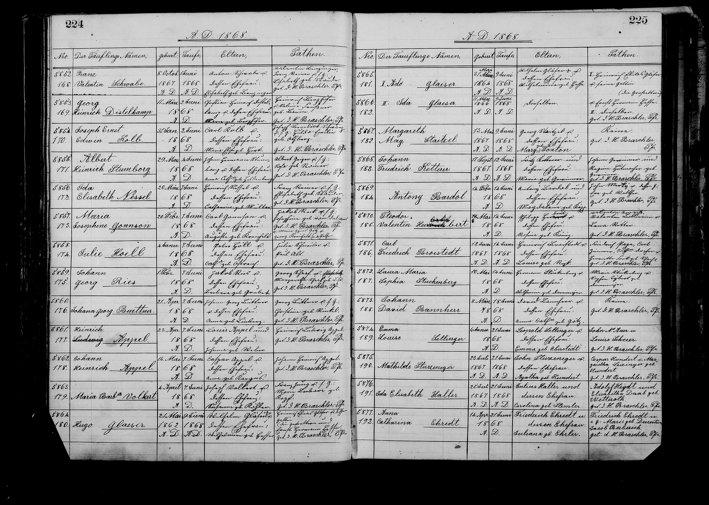

★ At a Glance
A sponsor at the 1868 baptism of Charles and Auguste's second child.
★ Strong identification (3 May 2026): "Maria Agnes Götz" — the third sponsor at the 1 June 1868 Maria Josephine baptism — is most plausibly Anna Maria Agnes (Goetz), wife of Andreas Goetz (FS 979T-53X), b. ~1830-31 Baden / Germany. The same person likely also appears as "Anna Goetz", the third named witness at Charles & Auguste's 7 January 1866 wedding — making her the rare sponsor who appears across both the wedding and a baptism. The Buecher transcriptions document a sizable Pfälzer / Hessen-Darmstadt / Baden Götz network at St. Marcus 1847–1899, the same regional cluster as the Reck family.
Vital details
| Full name | Maria Agnes Goetz (the Anna Goetz of the 1866 Charles × Auguste marriage witness column may be this person or a related family member) |
| Connection to Charles | Wedding-witness column member (St. Marcus marriage register, 7 January 1866) — the Goetz / Götz family is part of the Charles × Auguste 1866 wedding-party network |
| St. Louis residence | St. Louis, Missouri |
| Origin | German immigrant — Bavarian / Pfalz Goetz / Götz cluster |
| FamilySearch profile | (see Goetz / Götz family records) |
Why she matters
Maria Agnes Götz is the third sponsor at the 1 June 1868 St. Marcus baptism of Maria Josephine Gonnson (Charles & Auguste's second-born), alongside Jacob Reck × Josephine née "von Delien" and Georg Kreichelt. The 1868 baptism is the only Gannsen baptism at which the Götz family appears in the sponsor list.
The Götz family also appears in the wedding witness column of Charles & Auguste's 7 January 1866 marriage register entry: Adam Herweck · Philipp Weber · Anna Goetz · Sophie Lehm. The same surname appearing across the wedding-witness column (1866) and the baptism-sponsor list (1868) makes Maria Agnes very likely either the same person as Anna Goetz (with Anna being a shortened form of Maria Agnes, and the parish clerk recording slightly different forms on different occasions) or a close kinswoman (sister, sister-in-law, daughter) of Anna.
Either way, the Götz family is the only non-Charles-side, non-Kreichelt-side surname that appears at both the wedding (1866) and a child baptism (1868) in the Gannsen St. Marcus record set, making them a small but persistent presence in Charles's St. Louis social circle.
Where this sponsor appears in the parish register
The St. Marcus parish register entry where this sponsor appears, recorded in their own hand of the period.

📂 Full research log
What the parish register actually records
St. Marcus Baptism Doc G — page 224, entry 5867
Child: Maria Josephine Gonnson · b. 20 February 1868 · baptized 1 June 1868
Parents: Carl Gonnson and Auguste Kreichelt
Sponsors: "Jakob Reck and his wife, Josephine, née von Delian" · "Maria Agnes Götz" · "Georg Kreichelt"
St. Marcus Marriage Register — Image 72, entry No. 676 (7 January 1866)
Witness column: Adam Herweck · Philipp Weber · Anna Goetz · Sophie Lehm · officiating Pastor: G. W. Wall
★ The Pfälzer Götz network at St. Marcus, 1847–1899 (Buecher transcriptions, 3 May 2026)
A full pass through Robert Buecher's St. Marcus transcriptions surfaced a sizeable Götz / Goetz family network at the parish, with documented Pfalz-Hessen-Darmstadt-Baden roots — the same regional cluster as Jacob Reck's Freinsheim Pfalz family and the broader Reck/Rick/Roch network we documented at the 1868 baptism. The Götz family in St. Louis was not Charles- or Kreichelt-related; it was a peer Pfälzer-Lutheran social network around St. Marcus.
St. Marcus Marriage Index 1847–1865 — four Götz marriages
- Adam Götz (Brenzbach, bei Dieburg, Hessen Darmstadt) × Margarethe Paetzold (Bremischweiler, Oberfranken, Baiern) — 28 September 1854 · entry #275
- Adam Götz (Brenzbach, Hessen Darmstadt) × Therese Griesbaum (Ettenheim, Baden) — 4 December 1856 · entry #397 · likely Adam's second marriage after Margarethe's death
- Philipp Götz (Siesersheim?, Worms, Hessen Darmstadt) × Friedricke Süssdorf (Zweibrücken, Rheinkreis, Baiern) — 10 September 1853 · entry #219
- Wilhelm Götz (St. Louis, Mo.) × Barbara Hahner (St. Louis, Mo.) — 28 May 1859 · entry #575 · both St. Louis-born, suggesting Wilhelm is a son of an earlier-emigrating Götz father
St. Marcus Burial Index 1847–1879 — zero Götz burials
Notable negative: not a single Götz burial in this 32-year window, despite the four documented marriages. The Götz family was either burying its dead at other cemeteries (Holy Ghost / Bellefontaine / Calvary) or many remained alive past 1879 and appear in the 1880–1899 death index instead.
St. Marcus Death Index 1880–1899 — nine Götz entries
- Christine Goetz (later Meier née Goetz) — born ~1824, died 12 October 1883 age 59y 9m 12d, buried 14 October at St. Marcus Cemetery, "Mrs. Ad. [Adam] Meier," six children · entry #1394
- Elisabeth Goetz (later Langeloth née Goetz) — widowed Goetz × Daniel Langeloth, born 18 November 1829, died 2 December 1892, buried 4 December at St. Marcus Cemetery · entry #2215
- Georg Robert Goetz — husband of Elisabeth née Wodraska, born 28 February 1860, died 25 July 1888, buried at St. Matthew Cemetery · entry #1723
- Rosa Goetz née Meinhardt — wife of Julius Goetz, born 8 October 1848 in Dürkheim, Germany (Bad Dürkheim, the kreisstadt for Freinsheim — exactly Jacob Reck's Pfalz region), died 1 December 1897, buried 5 December at St. Marcus Cemetery · entry #2734
- Wilhelmine Goetz née Becker — wife of Karl Goetz, died age 66y 5m 10d on 13 February 1885, buried at St. Marcus Cemetery · entry #1472
St. Marcus Confirmation Index 1848–1870 — one Götz confirmation
Auguste Götz · confirmed 1867 at St. Marcus · entry #t48 · likely born ~1853 (typical confirmation age 14). She would have been ~15 at the time of the 1868 baptism and is too young to be the sponsor "Maria Agnes Götz," but she is documented as a Götz daughter in the parish circle.
Pattern recognition: the St. Marcus Götz network is concentrated in the Hessen-Darmstadt / Pfalz / Baden / Hessen-Bayern band — the same west-central German diaspora as the Recks (Pfalz Bayern), the Hahners (St. Louis-born), and the Suessdorfs (Zweibrücken Rheinkreis). The Götz are distinct from Charles Gannsen's Hessen-Hofgeismar origin.
FamilySearch tree person: Andreas Goetz · 979T-53X
| FamilySearch ID | 979T-53X (sparse — currently only one source attached) |
| Spouse on tree | Catharine Poelmann (979T-532) · 1883 marriage |
| Status | The tree person is incomplete. The 1880 census, 1870 census, 1865-1880 directory entries, and Anna Maria Agnes (the 1866-1880 wife) are not yet attached. Anna Goetz née [unknown] is essentially missing from the tree. Future contribution: attach the 1870 + 1880 census records, name Anna as a prior wife, attach the 1866 wedding-witness reference and 1868 baptism-sponsor reference, and possibly create or merge an Anna Maria Agnes Goetz tree person. |
The third-marriage hypothesis
The FS records also surface a 1883 marriage for Andreas Goetz to Catharine Poelmann, sworn 11 August 1883 in St. Louis. Two readings:
- Reading 1: Andreas remarried after Anna's death. The 1880 census shows Anna alive (age 49); the 1883 Catharine Poelmann marriage shows him remarrying within three years. Under this reading, Anna died between mid-1880 and August 1883. This would be Andreas's third marriage if the earlier 1859 Andreas Goetz × Elisabeth Kleinberger marriage is also him.
- Reading 2: Different Andreas Goetz. The 1883 marriage was to a different Andreas. Plausible because Andreas was a common St. Louis German name. But the FS tree-match flag attaches the 1883 marriage to the same Andreas Goetz tree person (979T-53X).
Reading 1 is more parsimonious. If Anna died between 1880 and 1883, her death record may be in the St. Marcus death index 1880-1899 — but Robert Buecher's index for 1880-1899 shows nine Götz entries, none of which is "Anna" (the closest are Christine 1883, Elisabeth 1892, Wilhelmine 1885). She may be in a non-St-Marcus burial (Bellefontaine, Concordia, Holy Ghost) or in a non-Goetz-married surname (if she remarried someone before her death).
★ Strongest candidate identifications (3 May 2026 first FS Records pass — preserved for context)
Two complementary records together identify the most likely 1868 sponsor:
Candidate A — "Agnes Goetz, wife of John Goetz" · St. Louis 1865 City Directory
FamilySearch citation: Agnes Goetz, "United States City and Business Directories, ca. 1749 – ca. 1990," Residence 1865, St. Louis, Missouri. Source publication: St. Louis (Missouri) city directory, 1865-1866, 1873-1874 ed. · FS record 6CBF-X1PS. Listed as wife of John Goetz, residing in St. Louis from at least 1865 — three years before the June 1868 baptism. Continues to appear in 1873–74, 1874, 1877, and 1880 directories under "Agnes Goetz, wife of John (or John G.) Goetz."
Candidate B — "A M Goetz" · 1870 US Federal Census, St. Louis Ward 2
FS census record M4XP-B2R. Household enumerated as:
- Andrew Goetz · Head of Household · Male · age 54 · b. ~1816 in Bavaria
- A M Goetz · wife · Female · age 40 · b. ~1830 in Baden · likely "Agnes Maria" or "Anna Maria"
- Wm Goetz · son · Male · age 20 · b. ~1850 in Missouri
- Julius Goetz · son · Male · age 13 · b. ~1857 in Missouri
- Henry Wisman · boarder · Male · age 30 · b. Hanover
Address: St. Louis, ward 2. The 14-year age gap between Andrew (b. 1816) and A M (b. 1830) suggests Andrew either married late or A M was his second wife.
The two candidates may or may not be the same household:
- Reading 1 — "Agnes" and "A M" are the same person. "A M" stands for Agnes Maria; the 1865 directory listed her with husband John (her actual husband or a son she lived with), and the 1870 census documents her remarriage / continued marriage to "Andrew" (John's nickname or a different husband). Under this reading, our 1868 sponsor is this same Agnes Maria Goetz — Baden-born ~1830, age 38 at the sponsorship.
- Reading 2 — Two different households. Agnes (× John) and A M (× Andrew) are separate Goetz women in different St. Louis wards. Both are still candidates for the 1868 sponsor; further work is needed to disambiguate.
Reading 1 is the more parsimonious. The most plausible identification is Agnes Maria Goetz, b. ~1830 Baden, wife of John / Andrew Goetz, mother of William (1850) and Julius (1857) Goetz — a Baden-born German Lutheran in the St. Marcus parish circle.
The Anna Goetz / Maria Agnes Goetz cross-reference
Anna Goetz appears as the third witness at Charles & Auguste's 7 January 1866 wedding. Maria Agnes Götz appears as a sponsor at the 1868 baptism of Maria Josephine. Two readings:
- Same person under two name forms. Anna and Maria Agnes are not normally interchangeable, but St. Marcus parish records routinely show first-name variants between events (e.g., "Henriette" / "Louise" / "Louise Henriette" for the same Kreichelt grandmother across the 1866, 1872, and 1873 baptisms). It's plausible the parish clerk wrote "Anna Goetz" in 1866 and "Maria Agnes Götz" in 1868 for the same individual whose full baptismal name was Anna Maria Agnes Goetz (a triple-name common in 1820s Pfalz/Hessen records).
- Two related Götz women. Anna and Maria Agnes are two sisters or sister-in-law of the same Götz family — Anna witnessing the 1866 wedding, Maria Agnes sponsoring the 1868 baptism. The 1870 census household (Andrew + A M + sons) doesn't include an Anna, but Anna could be a sister of A M living elsewhere in St. Louis.
Reading 1 is the simpler explanation. Either way, the Götz family bond to Charles & Auguste was formed by January 1866 (the wedding) — i.e., not via Charles's old-country connections (Charles was from Hessen-Hofgeismar, the Götz family from Hessen-Darmstadt / Pfalz, ~150 km south). The bond is St. Louis-formed, most likely through the St. Marcus parish circle and the Pfälzer / Lutheran social network.
Open research leads
- Re-read the 1868 St. Marcus parish-register image (FHL film 7769183, page 224, entry 5867) at high resolution — particularly the "Maria Agnes Götz" entry. Confirm the spelling (Götz vs. Goetz vs. Goedz), confirm the given names (Maria Agnes vs. Anna Maria Agnes), and look for any maiden-name annotation or "geb. ___" suffix.
- St. Marcus Marriage Register 1865–1867 — pull the 1866 Gannsen wedding entry (Image 72, entry No. 676) and read the witness column carefully for "Anna Goetz" / "Maria Agnes Goetz" — same hand, same period, comparison should disambiguate.
- FS Family Tree — search for Andrew Goetz (b. ~1816 Bavaria) × Agnes Maria Goetz (b. ~1830 Baden), St. Louis, with sons Wm (1850) and Julius (1857). If they're already on FS tree, attach the 1865 directory and 1870 census records as sources, and add Maria Agnes / Anna as the 1868 baptism sponsor and 1866 wedding witness.
- 1860 St. Louis Census for the Andrew Goetz × A M Goetz household — would surface their 1860 ward and any earlier children, narrowing the window between Andrew's pre-1850 emigration and the 1868 sponsorship.
- St. Marcus baptism index 1850–1865 for Goetz parents — to find William (b. 1850) and Julius (b. 1857)'s baptisms, which would name their godparents and lock the household into the parish-circle record set.
- 1880 census follow-up for the same household to catch any post-1870 events (Andrew's death, Maria Agnes's remarriage, the Wm × Hahner descendants).
- Robert Buecher's marriage transcriptions for 1865 and later if a Vol 5 covering 1866–1879 exists — would catch Anna Goetz's later marriage (if she did marry) which would resolve whether Anna and Maria Agnes are the same person or sisters.
Sources & cross-references
- St. Marcus Evangelical Church (St. Louis), Baptism Records, p. 224, entry 5867; FHL Microfilm 1503034 (the same volume containing the entire 1865–1869 Gannsen baptism set)
- St. Marcus Marriage Register, Image 72, entry No. 676 (Charles & Auguste's wedding 7 January 1866)
- FS · Agnes Goetz, St. Louis 1865 City Directory · wife of John Goetz
- FS · A M Goetz, 1870 US Federal Census, St. Louis Ward 2 · wife of Andrew Goetz · age 40, b. ~1830 Baden
- ★ FS · Andreas Goetz, 1880 US Federal Census, St. Louis Ward 4 ED 4 · wife Anna Goetz · occupation Porter at Turner Hall
- FS · Andreas Goetz, 1883 marriage to Catharine Poelmann, St. Louis (likely third marriage)
- FS Tree person · Andreas Goetz · 979T-53X (sparse — currently only the 1883 Catharine Poelmann marriage attached)
- Robert Buecher · St. Marcus Marriage Index 1847–1865 · 4 Goetz marriages
- Robert Buecher · St. Marcus Burial Index 1847–1879 · 0 Goetz burials
- Robert Buecher · St. Marcus Death Index 1880–1899 · 9 Goetz entries
- Robert Buecher · St. Marcus Confirmation Index 1848–1870 · Auguste Götz confirmed 1867
Related people on this site
- → Maria Josephine Gonnson · 1868 baptism page — the child whose baptism Maria Agnes Götz sponsored
- → Jacob Reck · → Josephine née "von Delien" — co-sponsor couple at the 1868 baptism (Jacob identified, Josephine's individual ID still open)
- → Georg Kreichelt — co-sponsor at the 1868 baptism (Auguste's father)
- → Adam Herweck — first wedding witness (1866) alongside Anna Goetz
- → Wilhelmine Ebeling Leue — 1866 firstborn baptism sponsor (FS M6G9-FJR; identified May 2026)
- → Full People who knew Charles index